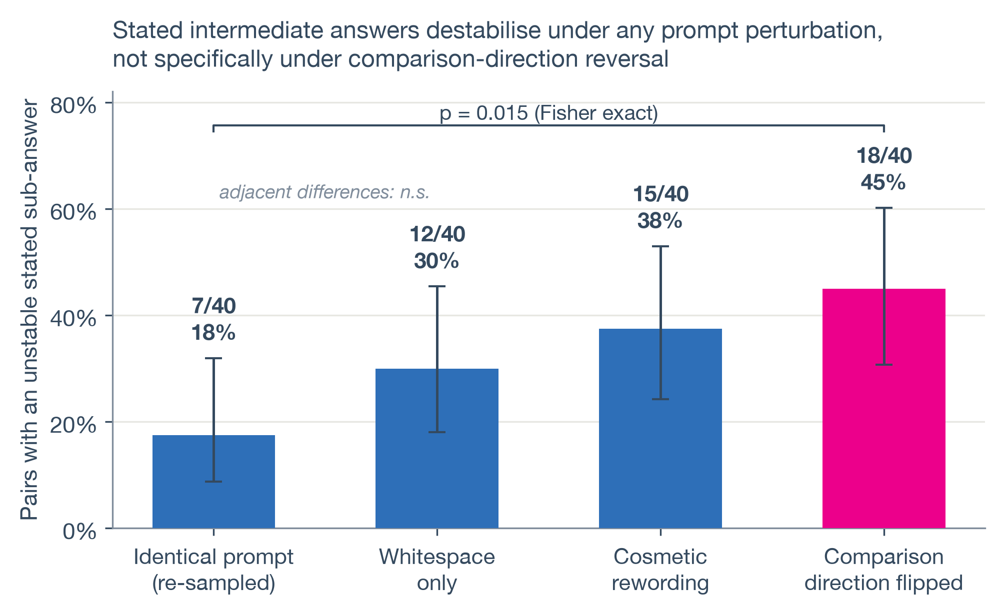

The transfer test
The reversed-comparison test asks logically opposite comparative questions and checks consistency. This project transfers that idea from factual recall to pairs of hard Putnam mathematics problems with Lean-verified answers, while tracking the model’s stated intermediate answers.

A ladder of controls
Intermediate answers change in 45% of reversed-comparison pairs, compared with 18% under identical re-sampling (p = 0.015). However, whitespace-only changes already produce 30% instability and cosmetic rewording produces 38%; neither is distinguishable from the reversal condition in this sample.
What the result supports
Answer flips favor the requested direction only 12 out of 20 times (p = 0.50). The evidence points to sensitivity of the reasoning trace to prompt wording, concentrated in particular problems, rather than demonstrated motivated reasoning. A metric that is informative in one task domain can conflate different mechanisms after transfer.
Scope
This is a limited study of one model and a small problem set, not a general verdict on chain-of-thought faithfulness. It measures stated intermediate answers rather than internal computation; non-significant differences do not establish equivalence.